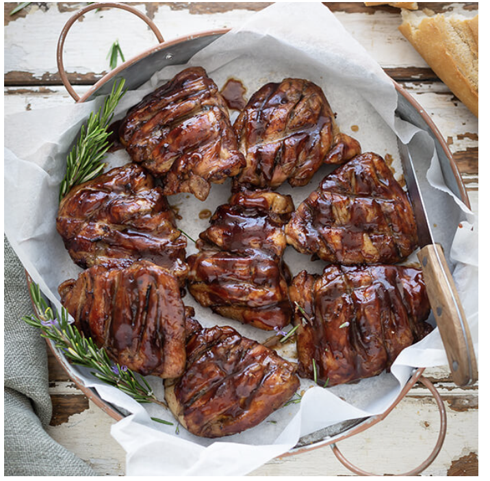

Braaied chicken thighs

With a sticky Plum & Soy Marinade & Baste
Ingredients:
- 12 chicken pieces (drumsticks or thighs)
- 2 tots olive oi
- 1 tot chopped garlic
- 1 tot lemon juice
- 1 tot chopped fresh herbs (parsley, sage, rosemary, thyme, basil)
- 1 tsp salt
Steps:
- Mix all the ingredients (except for the chicken) together.
- Take a sharp knife and make a long, deep cut down to the bone on each drumstick and one or two deep cuts in the top of each thigh.
- Use a teaspoon to place some of the mixture in each cut and use your recently washed hands to rub the mixture into the cuts properly. Rub any remaining marinade all over the chicken pieces.
- Braai over medium coals for about 20 minutes turning regularly, until done.